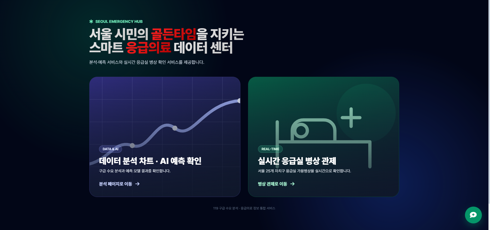
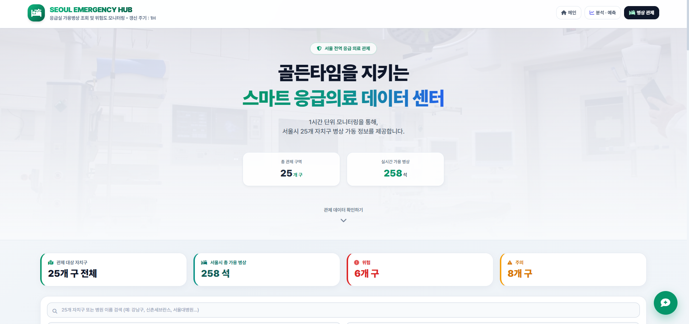
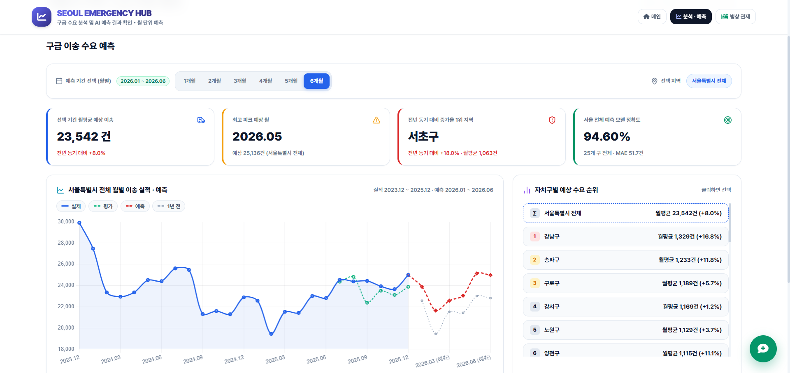
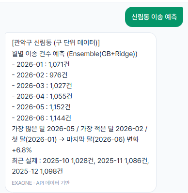
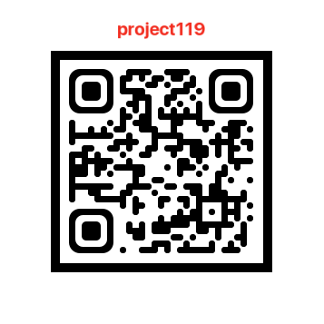

119 구급대가 환자를 태우고도 받아 줄 응급실을 찾지 못해 다른 병원으로 다시 옮기는 일, 이른바 '응급실 뺑뺑이'가 의료 공백 이후 다시 늘었습니다.
2023년 4,227건보다 30% 넘게 증가
2021년 6,429건 이후 줄던 흐름이 2024년에 다시 증가
3~5월 광주·전북·전남, 이송이 늦어지면 광역상황실이 병원 선정 지원 (9월 전국 확대)
구급대가 병원을 빨리 찾으려면, 어느 지역에 언제 수요가 몰릴지 미리 아는 것이 출발점입니다.
금천구 606건 ~ 강남구 1,425건
송파구 17.8건 ~ 강북구 34.2건
자치구별 이송 수요 예측과 실시간 응급실 병상을 한 화면에
2025년 6개월 평가 구간 결과입니다. 기준선은 '마지막 달 유지(지난달 값을 그대로 쓰기)'입니다.
MAE 66.4건 → 51.8건 (기준선 대비)
기준선 93.25% 대비 1.34%p 향상
2026년 1월~6월, 25개 자치구별 월 이송 건수
평가 구간: 2025년 7~12월 (학습에 쓰지 않은 기간), 정확도 = (1 − MAPE) × 100
데이터 수집부터 웹 서비스까지의 흐름입니다.
발견한 패턴을 모델이 쓸 수 있는 변수로 바꿨습니다. 괄호 안은 앙상블 6개월 검증 결과입니다.
| 발견한 패턴 | 모델 변수 |
|---|---|
| 추세보다 계절성이 뚜렷함 | 월 (원-핫 인코딩) |
| 자치구마다 이송 규모가 다름 | 자치구 (원-핫 인코딩) |
| 이번 달은 직전 달과 비슷함 | 이송 이력 특성 (지난달 값 등) |
| 달의 일수, 주말, 공휴일, 명절에 따라 변동 | 일수, 주말 수, 평일 공휴일 수, 명절 연휴 일수 (검증 정확도 93.89% → 94.61%) |
| 소방서 개서로 관할이 나뉘며 건수가 바뀜 (금천·구로·성동·광진) | 개서 여부 |
| 지난달 대비 증감량을 예측하면 검증 정확도 94.23%로 달력보다 낮음 | 미채택 |
| 생활인구를 넣으면 검증 정확도가 0.177%p 낮아짐 | 이송 모델에서 제외 (인구 밀집 모델에서 사용) |
이송 건수 모델입니다. 검증 6개월 정확도로 최종 모델을 고르고, 평가 구간으로 성능을 보고했습니다.
| 모델 | 검증 6개월 정확도 (%) | 평가 6개월 정확도 (%) | 평가 6개월 MAE (건) | 평가 1개월 정확도 (%) |
|---|---|---|---|---|
| GradientBoosting + Ridge 앙상블 (최종) | 94.61 | 94.59 | 51.8 | 94.62 |
| GradientBoosting | 94.35 | 93.27 | 62.1 | 95.00 |
| LinearRegression | 92.78 | 87.87 | 111.2 | 92.19 |
| Ridge | 92.73 | 94.27 | 54.2 | 93.59 |
| RandomForest | 92.51 | 93.98 | 54.7 | 95.60 |
| 기준선 (마지막 달 유지) | 91.82 | 93.25 | 66.4 | 95.41 |
| DecisionTree | 91.45 | 92.76 | 66.5 | 95.30 |
| DNN (Keras) | 88.96 | 91.82 | 73.4 | 93.49 |
| 기준선 (전년 같은 달) | 87.48 | 90.68 | 90.9 | 90.68 |
자치구별 하루 최대 생활인구입니다. 평가 구간은 2025년 8월~2026년 7월 365일입니다.
| 모델 | 검증 정확도 (%) | 평가 정확도 (%) | 평가 MAE (명) |
|---|---|---|---|
| RandomForest (최종) | 98.59 | 98.16 | 8,836 |
| GradientBoosting | 98.36 | 97.97 | 9,463 |
| DNN (Keras) | 98.08 | 97.25 | 12,804 |
| 기준선 (7일 전 그대로) | 97.86 | 97.54 | 12,015 |
| DecisionTree | 97.86 | 97.48 | 11,685 |
| Ridge | 97.34 | 97.11 | 14,036 |
| LinearRegression | 97.33 | 97.11 | 14,041 |
25개 자치구 예측을 더한 값입니다. 5월이 가장 많습니다.
서울 응급의료 허브의 실제 화면입니다. 이미지를 누르면 크게 볼 수 있습니다.




| 구성 | 방식 |
|---|---|
| 예측 결과 | 예측 노트북이 dashboard_data.json 저장, 서버가 요청마다 다시 읽음 |
| 실시간 병상 | 1시간 캐시, 전체 갱신 하루 최대 3회, API 호출 하루 100회 제한 |
| 동 → 자치구 연결 | 법정동 373개를 자치구로 바꾸는 표 (dong_to_gu.json) |
| 가까운 응급실 | 응급실 75곳 좌표와 현재 위치 사이 거리 계산 |
| 공개 배포 | 챗봇을 뺀 대시보드만 Vercel 배포 (용량이 큰 torch·transformers 제외) |
1개월만 예측하면 기준선(95.41%)이 모델(94.62%)보다 조금 높았습니다. 자치구별로는 25곳 중 19곳이 93% 이상이지만 양천구는 90.07%였습니다. 앙상블은 평가 결과를 본 뒤 추가한 후보이며, 최종 선택은 검증 점수로만 했습니다.
강북구·마포구는 실시간 API 미제공이라 등록 병상 수로만 안내
행사·날씨 등 특성을 더해 1개월 예측에서도 기준선 넘기기
로컬에서만 쓰는 EXAONE 챗봇을 공개판에도 가볍게 연결
웹 기능 정의, 모델 구현·학습, 데이터→모델→웹 통합, 발표 대본
UI/UX 설계, 웹 기본 구조, 파생변수 생성, 최종 모델 선정
결측·이상치 처리, 기초 통계 분석, API 연동, PPT 구성·디자인
데이터 정제, 예측 문제 정의, 결과 화면 구현, 웹 기능 테스트
결과 보고서와 작업일지를 내려받을 수 있습니다.
